- Главная
- Полезные советы
- Заправка пневмосистемы азотом Туарег NF
Заправка пневмосистемы азотом Туарег NF
ЗаписатьсяC 2010 года, концерн VAG внес изменения в свои автомобили и системы входящие в него. Одним из таких изменений коснулась и работа пневмоподвески. Данная система получила замкнутый контур, в нутрии которого под давлением закачен азот. Это сделано для того, чтобы исключить из системы воздух, который в свою очередь разносит по системе влагу, при низких температурах замерзает, и система выходит из строя. Но данная система хоть и считается замкнутой, в неё все равно подкачиваться воздух. Соответственно со временем в системе пневмоподвески образовываться конденсат, который зимой замерзает и приводит к неисправностям в работе пневмосистемы.
Что происходит при этом с автомобилем?
Замерзший конденсат блокирует работу компрессора пневмоподвески, происходит его перегрев, в некоторых случаях перегорает предохранитель. На панели приборов появляется "Ошибка: ходовая часть". Работа пневмоподвески блокируется. Эксплуатация автомобиля с неисправной пневмосистемой, приведет к замене компрессора пневмоподвески.
Автотехцентр VWS рекомендует производить заправку пневмоподвески азотом минимум 1 раз в три года перед зимним периодом.
Автотехцентр VWS производит полный комплекс работ по диагностике, ремонту и обслуживанию системы пневмоподвески на автомобилях Ауди и Фольксваген.
Стоимость заправки пневмосистемы азотом в автосервисе – 6000 руб.
Заправка пневмосистемы в нашем автосервисе
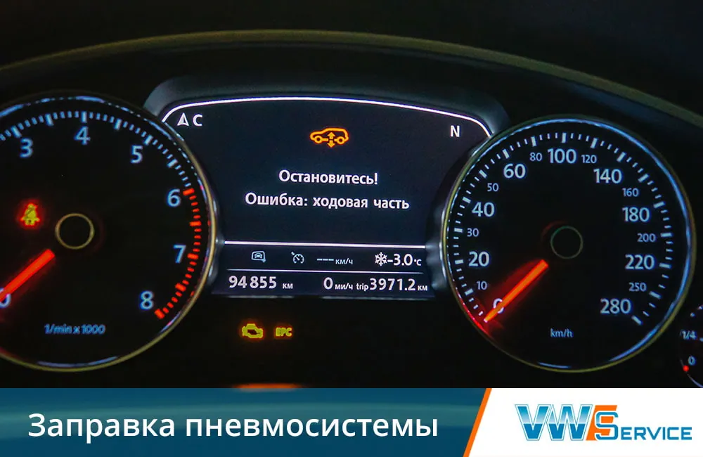
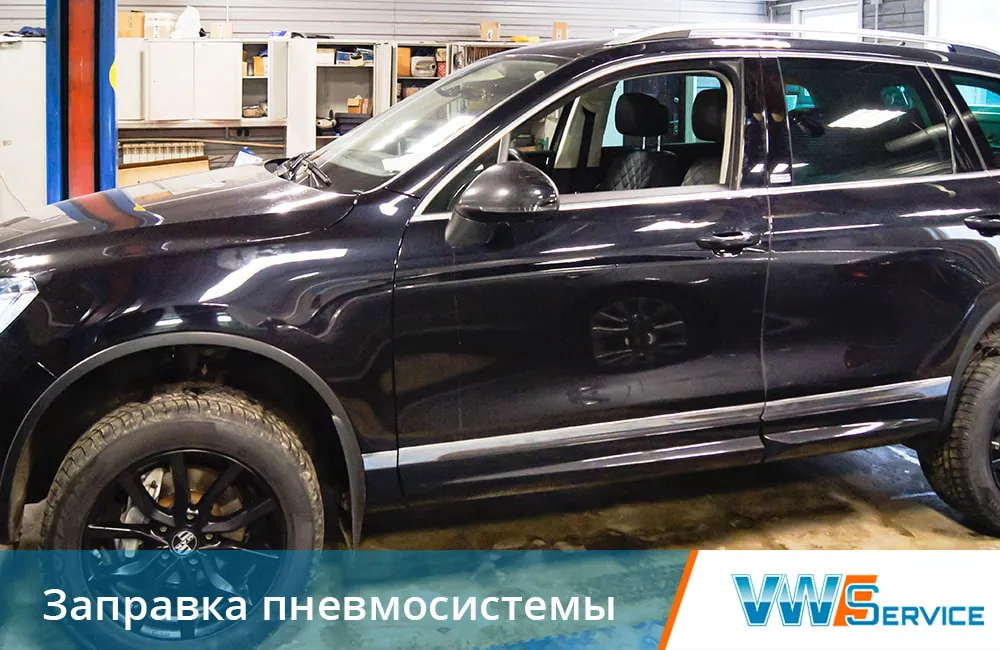
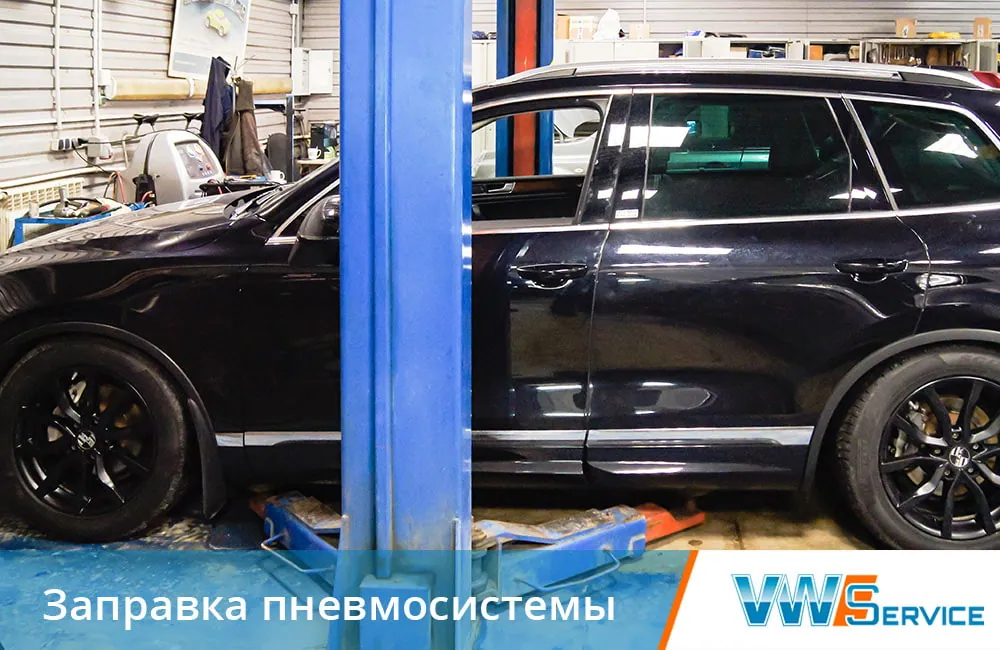
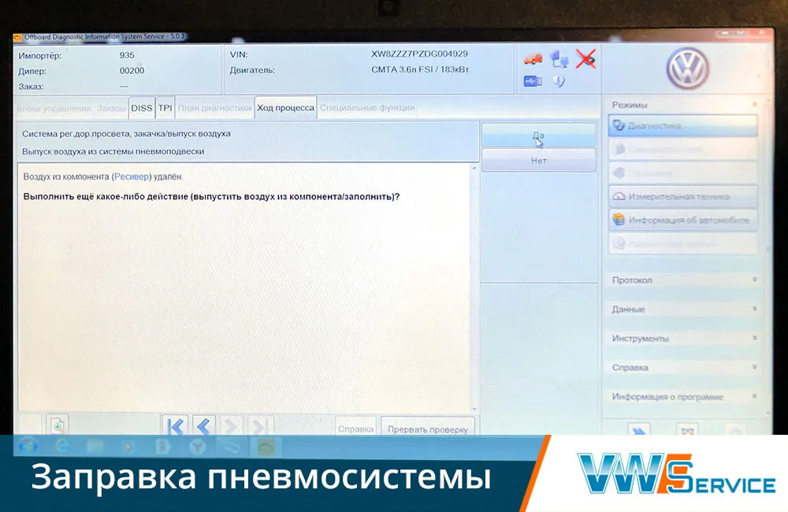
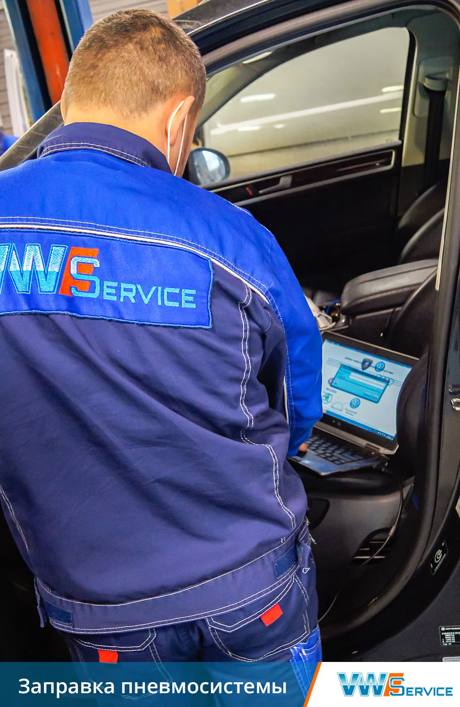
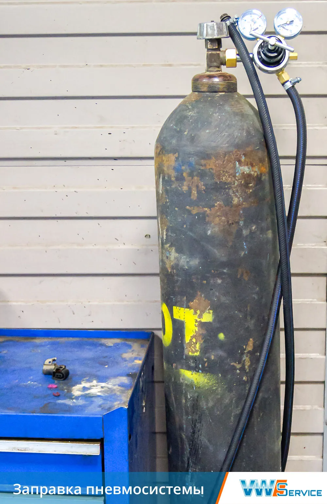
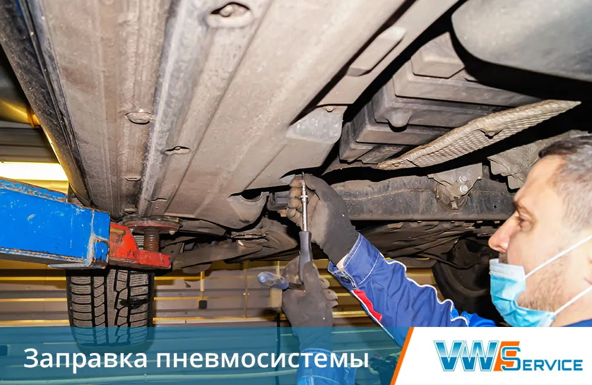
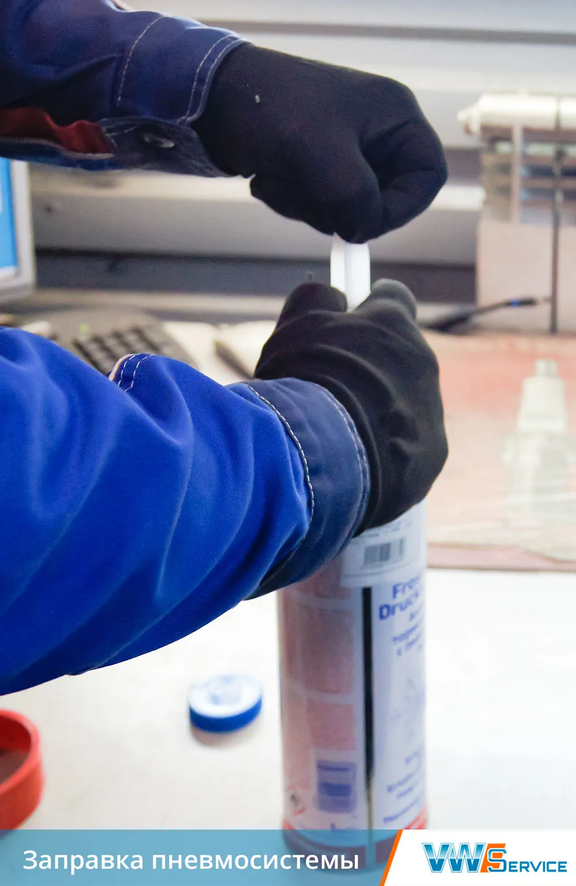
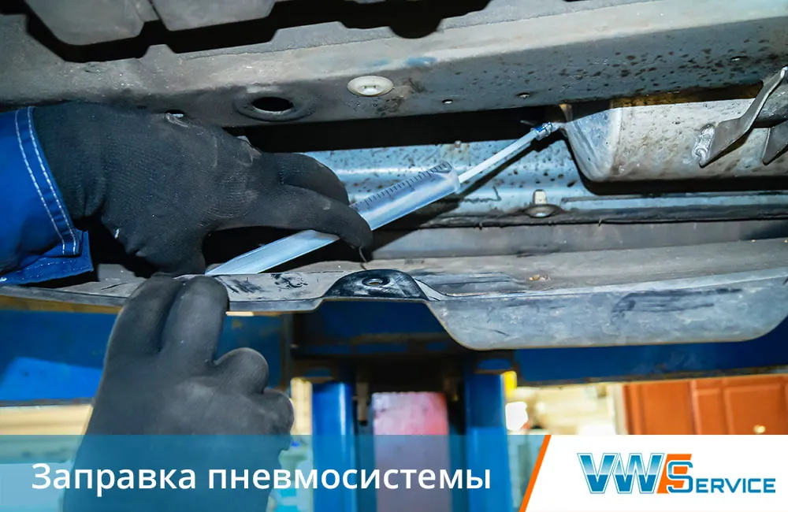
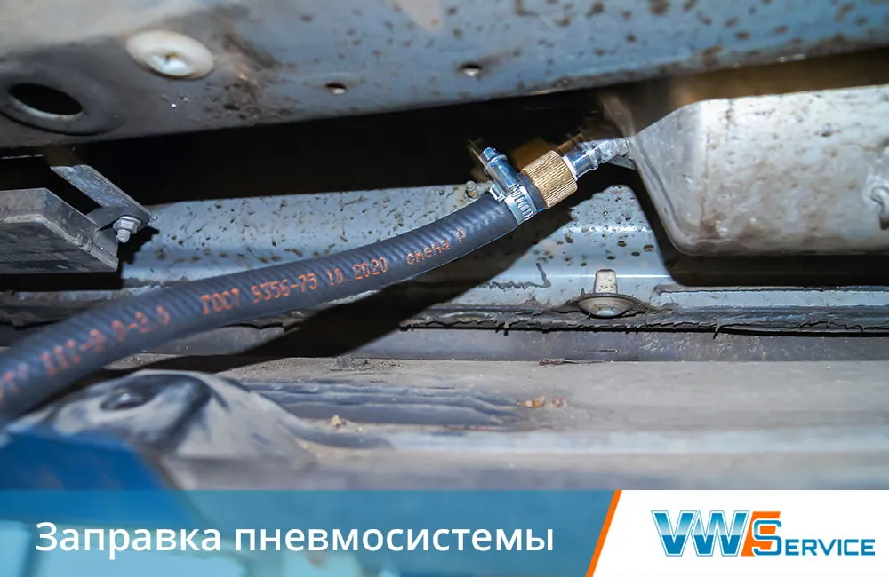
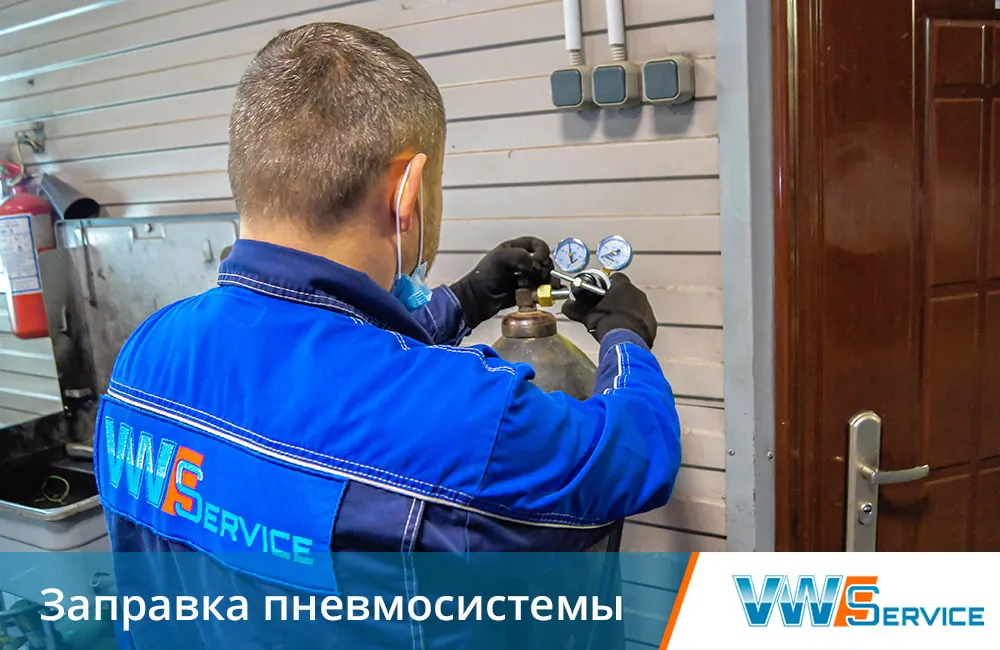
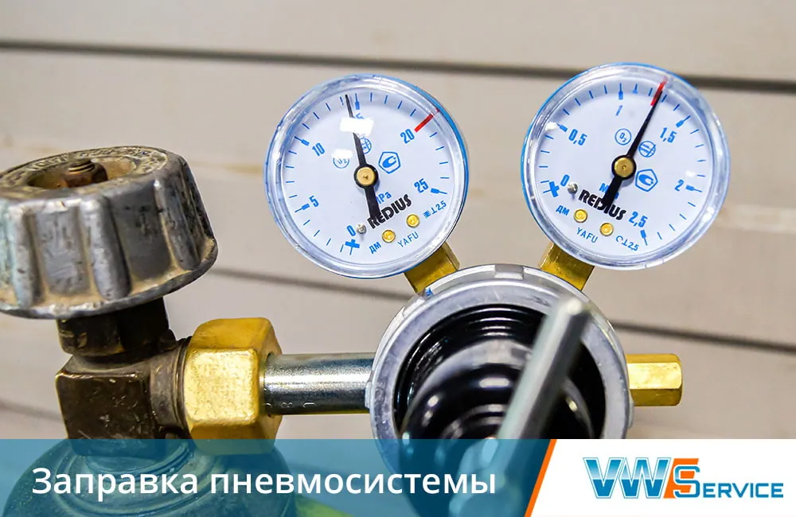
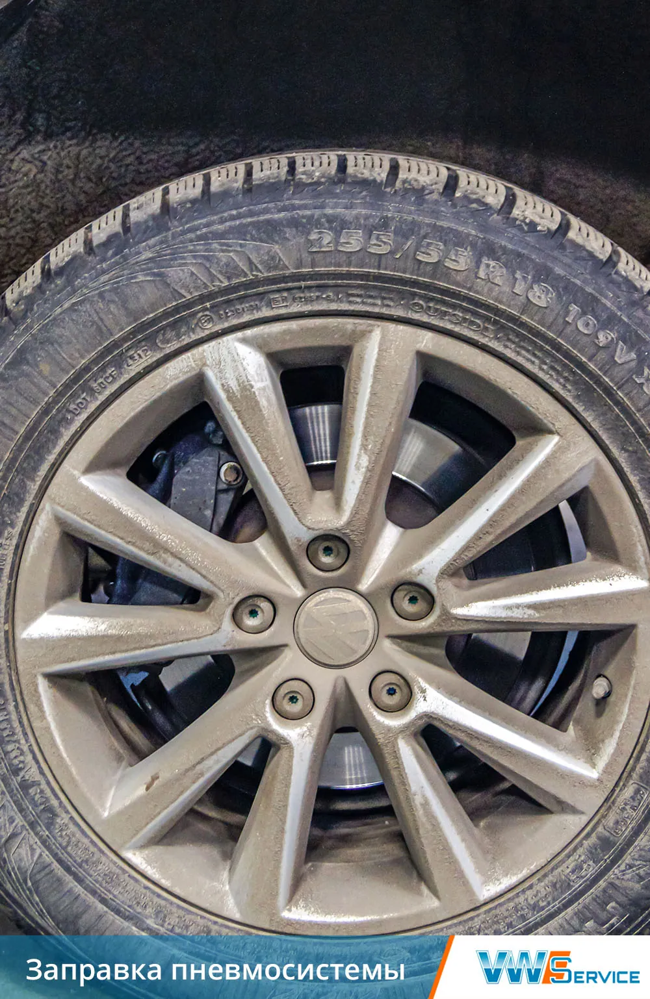
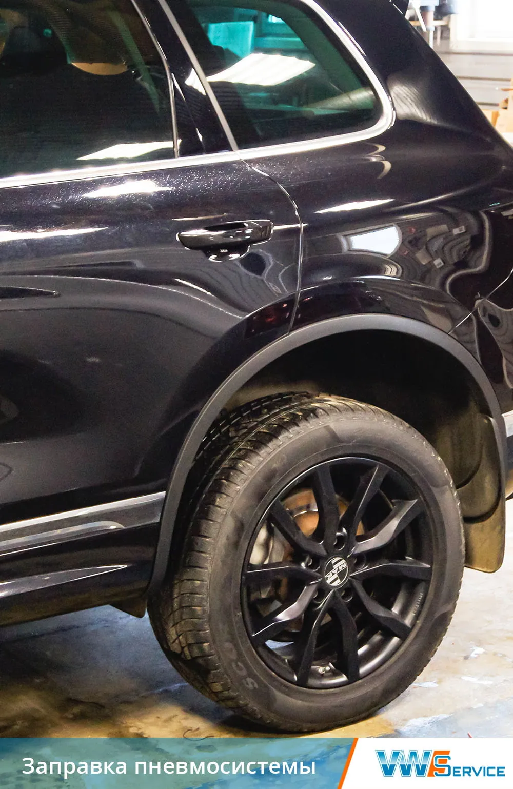
Смотрите также
Контакты
- г. Москва, 1-й Дорожный проезд, д. 5АЮАО Москвы. Ближайшее метро — «Южная»
- Ежедневно с 8:30 до 20:30Без выходных. Приём автомобилей — круглосуточно
- +7 (495) 260-06-02Эвакуатор: +7 (495) 796-29-99